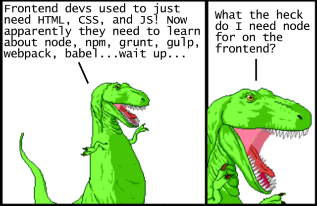
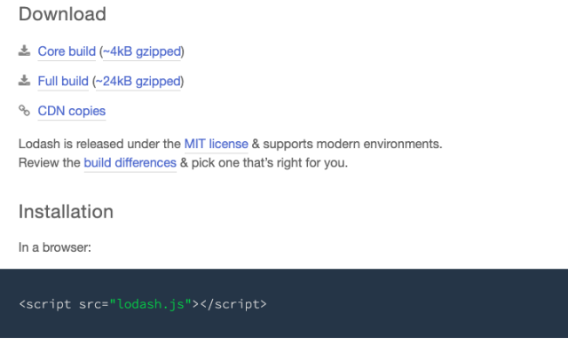
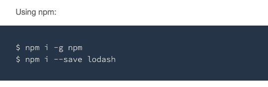
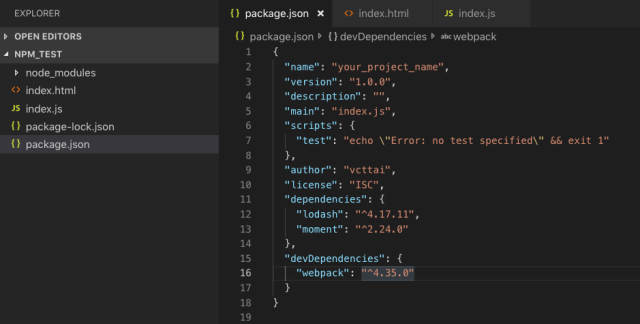
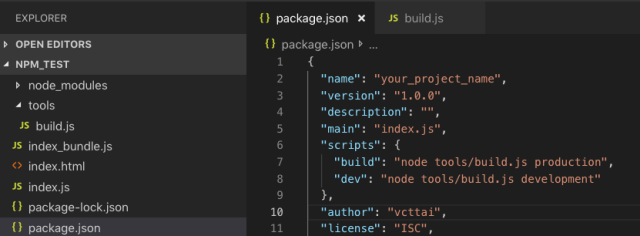

Ra đời với mục đích là một ngôn ngữ sẽ được thực thi ở browsers phía client-side, trong quá trình phát triển hơn 20 năm, Javascript đã có một bước tiến thần kì khi giờ đây nó được dùng cả trong việc xây dựng các xử lí ở phía server thông qua Node.js nữa. Tuy nhiên, việc biên dịch được mã Javascript ở phía server-side là một câu chuyện hoàn toàn khác. Trong bài này, chúng ta sẽ tập trung vào quá trình phát triển của Javascript dưới vai trò là một ngôn ngữ được thực thi ở phía client-side (trên các browsers), cách mà nó đã tiến hóa để khiến các lập trình phía front-end đau đầu như thế nào.
Nếu đã từng làm việc với Javascript ở cái thời mà web còn sơ khai, bạn sẽ thấy cách để áp dụng Javascript vào hệ thống web của bạn khá đơn giản: việc bạn cần làm là tạo một file javascript có phần mở rộng là *.js và load vào html thông qua tag <script>. Ngày nay, làm việc với Javascript ở phía client-side không còn đơn giản như vậy nữa. Bạn sẽ phải biết qua về thao tác dòng lệnh (command-line), sử dụng webpack để đóng gói các file, dùng babel để transpile sourcecode cho tương thích với các trình duyệt cũ, minify sourcecode, quản lí packages, dùng task runners hỗ trợ,… Có quá nhiều thứ liên quan khiến bạn đau đầu không biết chúng là gì và vai trò cụ thể của nó là gì.
Bài viết này ra đời với mục tiêu khái quát cách sử dụng Javascript để phát triển trang web, đi từ việc sử dụng “Javascript thuần” mà không có bất kì công cụ gì hỗ trợ, cho tới việc áp dụng đầy đủ các công cụ hỗ trợ mới nhất ngày nay để mọi người có thể hình dung vai trò của từng thành phần trong đó.
Thuở sơ khai trong việc sử dụng Javascript
Chúng ta hãy bắt đầu với việc sử dụng Javascript theo cách cổ điển nhất có thể. Khi đó, trang web của chúng ta chỉ đơn thuần là những file html có nhúng javascript thông qua tag <script>, ví dụ file index.html của ta sẽ trông như sau:
<!-- index.html --!> <!DOCTYPE html> <html lang="en"> <head> <title>Simple web page</title> <script src="index.js"></script> </head> <body> <h1>Hello HTML world!</h1> </body> </html>
Đoạn mã <script src='index.js'></script> đóng vai trò load một file javascript ở thư mục cùng cấp với file html và thực thi nó ở trên browser khi trang web được load. Đây là tất cả những gì ta cần phải làm để sử dụng được javascript bên trong trang web, rất đơn giản và trực quan phải không nào.
Hãy đi tới bước kế tiếp, ta cần thao tác với một vài dữ liệu dạng mảng trong javascript, những hàm có sẵn thì không đủ hữu dụng nên ta đành sử dụng thêm một thư viện bên ngoài là lodash để hỗ trợ. Thư viện lodash cung cấp một số công cụ hữu ích như so sánh 2 mảng chẳng hạn (trong javascript thuần không có hàm này):
var array = ['hello','goodbye']; var others = ['hello','goodbye']; array == others; // javascript thuần → false _.isEqual(array, others); // dùng lodash → true
Câu hỏi đặt ra là: vì lodash là một thư viện javascript được cung cấp bởi bên thứ 3, làm thế nào để thêm lodash vào trang web của bạn? Hãy đi tới trang chủ của lodash và xem hướng dẫn:
Với hướng dẫn này, ta thấy công việc phải làm cũng khá là đơn giản: tải file lodash.js về máy và đặt trong thư mục source, sau đó dùng tag <script> để load file này vào trong trang web của ta. Lúc đó file index.html của ta sẽ trông như sau:
<!-- index.html --!> <!DOCTYPE html> <html lang="en"> <head> <title>Simple web page</title> <script src="lodash.js"></script> <script src="index.js"></script> </head> <body> <h1>Hello HTML world!</h1> </body> </html>
Như vậy là ta đã có thể dùng lodash thoải mái trong file index.js rồi:
//index.js _.trunc('hi-diddly-ho there, neighborino', 24); // → 'hi-diddly-ho there, n…'
Thật dễ dàng phải không nào! Chỉ có một lưu ý là: để sử dụng được lodash trong file index.js, ta cần phải dùng tag <script> để load lodash lên trước khi ta load file index.js (hoặc với bất kì file javascript nào muốn dùng được lodash, ta cũng phải load ở phía sau).
Đến đây, câu hỏi về việc làm thế nào để thêm một thư viện bên ngoài (3rd-party-library) đã được giải đáp. Một vài phân tích tóm gọn như sau:
Điểm tốt: cách giải quyết này đơn giản.
Điểm hạn chế: nếu ta cần update thư viện thì giải quyết như thế nào? Chả lẽ cứ phải download thủ công hay sao? Việc kiểm soát version của thư viện cũng tương đối khó khăn.
Điểm hạn chế này tồn tại rất lâu, cho tới một ngày …
npm – bộ quản lí thư viện xuất hiện
Chúng ta đang nói về việc sử dụng javascript ở phía client-side. Tuy nhiên, đến thời điểm này, ta buộc lòng phải nói qua về việc sử dụng javascript ở phía server-side một chút, mình sẽ giải thích “tại sao” ở những phần tiếp sau đây nhé. Bắt đầu với sự xuất hiện của Node.js vào năm 2009
Vào năm 2009, với sự xuất hiện của Node.js, javascript giờ đây không những có thể biên dịch và chạy ở browser, mà nó còn có thể chạy được ở phía server-side thông qua trình biên dịch là Node.js. Một năm sau đó, npm ra đời với vai trò là một “công cụ quản lí package” cho các project Node.js. Khoan hãy nói về cách mà javascript được thực thi bởi Node.js, ta sẽ xem cách mà npm quản lí package ra sao nhé:
Lưu ý: tới thời điểm này, vì đang sử dụng các công cụ ở phía server-side nên lập trình viên cần phải biết sử dụng dòng lệnh (command-line). Điều này khiến cho việc học sử dụng dòng lệnh gần như là một điều bắt buộc đối với lập trình viên, bất kể bạn làm việc ở Front-end hay Back-end.
Đầu tiên, để sử dụng được npm bạn cần cài đặt Node.js (npm là một công cụ đính kèm trong đó). Sau đó, bạn mở cửa sổ dòng lệnh, điều hướng tới thư mục project của bạn (ở đây đang ví dụ là folder chứa file index.html), sau đó chạy lệnh:
npm init
Câu lệnh trên có ý nghĩa là ta khởi tạo một project có sự quản lí của npm bên trong folder ta đang gọi thực thi lệnh. Chương trình sau đó sẽ hỏi bạn vài câu hỏi, tạm thời cứ để các tham số mặc định, cuối cùng npm sẽ tạo ra một file có tên là package.json chứa các cấu hình liên quan tới project của chúng ta. File này có dạng như sau:
{ "name": "your_project_name", "version": "1.0.0", "description": "", "main": "index.js", "scripts": { "test": "echo \"Error: no test specified\" && exit 1" }, "author": "vcttai", "license": "ISC" }
Vậy là ta đã xong bước khởi tạo project có sự quản lí của npm. Bây giờ, để cài đặt thêm một thư viện mới (ví dụ ở đây là cài đặt lodash) ta có thể làm theo như trong hướng dẫn của trang chủ lodash:
Vẫn ở trong cửa sổ dòng lệnh khởi tạo project khi nãy, chạy lệnh sau để cài đặt lodash vào trong project của ta:
npm install --save lodash
Sau khi thực thi câu lệnh này, ta sẽ thấy có 2 việc xảy ra:
- Một là thư viện lodash đã được tải về và đặt trong thư mục node_modules của project.
- Hai là file package.json đã được cập nhật: thêm thông tin của thư viện lodash
Như vậy, với sự trợ giúp của npm, vấn đề phải download thủ công từng thư viện dùng ngoài đã được cải thiện. Giờ đây thông tin của thư viện và version sử dụng đã được chỉ định rõ trong file package.json, ta sẽ rất dễ dàng để quản lí cũng như chia sẻ project cho nhiều người khác cùng phát triển. Họ chỉ đơn thuần chạy lệnh npm install là tất cả thư viện sẽ được npm tải về một cách tự động.
Nhưng đến đây thì npm mới chỉ đóng vai trò “tải thư viện về” giùm ta thôi, việc load thư viện lên html để sử dụng vẫn phải làm thủ công. Ta cần phải sửa lại đường dẫn một chút xíu trong file index.html để thư viện có thể load được, lúc này file lodash.js nằm sâu bên trong thư mục node_modules như sau:
<!-- index.html --!> <!DOCTYPE html> <html lang="en"> <head> <title>Simple web page</title> <script src="node_modules/lodash/lodash.js"></script> <script src="index.js"></script> </head> <body> <h1>Hello HTML world!</h1> </body> </html>
Như vậy có thể thấy rằng, mặc dù npm đã giúp ta trong việc quản lí và download tự động các thư viện, vấn đề về “load thư viện lên html” vẫn còn rất nhiêu khê khi ta phải đi sâu vào trong thư mục node_modules để tìm ra chính xác đường dẫn của thư viện.
Đây là một trong những điểm chưa tốt mà ta sẽ tìm cách cải thiện nó.
Nhắc lại vấn đề import modules trong javascript và sự cải tiến của nodejs
Nhắc lại một chút về tính năng của ngôn ngữ, những ngôn ngữ lập trình khác ở phía Server-side, tính năng import sourcecode từ một file này đến một file khác là một tính năng đã có từ rất lâu rồi, lấy ví dụ với PHP, bạn có thể sử dụng tính năng này qua hàm include hoặc include_once như sau:
//DBConnection.php class DB Connection { // class body here } //index.php //Để sử dụng lớp DBConnection ta cần include chúng include "DBConnection.php" $db_connection = new DBConnection(); ...
Thế nhưng với Javascript ở các phiên bản từ ES5 trở về trước, tính năng này không hề tồn tại, có thể vì ban đầu Javascript được thiết kế để chạy ở client-side. Điều này dẫn tới việc nếu bạn muốn sử dụng source code được viết ở một file nào đó, bạn cần phải load nó vào html trước thông qua tag <script>, nội dung của file được load này cũng sẽ có phạm vi toàn cục để các source code sau có thể sử dụng được. Lấy ví dụ thư viện lodash ở trên, sau khi được nạp vào html thông qua lệnh <script src="lodash.js">, ở những file source code sau đó ta có thể sử dụng biến _ như là 1 đối tượng lodash.
Và rồi Node.js xuất hiện, vì nó là một trình biên dịch được tạo ra ở phía server, vậy nên nó sẽ hỗ trợ tính năng import code. Lấy lại ví dụ ở trên, nếu ta cần import thư viện lodash vào file index.js của ta và sử dụng, cú pháp thực hiện trong Node.js như sau:
//index.js //import lodash var _ = require('lodash'); //Use lodash _.trunc('hi-diddly-ho there, neighborino', 24);
Có một điều cần lưu ý ở đây, khi ta sử dụng lệnh require('lodash'), Node.js sẽ tự động tìm vị trí chính xác của thư viện lodash bên trong thư mục node_modules mà không cần ta phải chỉ định rõ đường dẫn (tức là ta không phải dài dòng require('node_modules/lodash/lodash.js') làm chi cả. Điều này mang lại trải nghiệm tuyệt vời cho lập trình viên.
Thế nhưng (lại “nhưng” rồi), với cách viết ở trên, ta chỉ có chạy file index.js ở server thông qua Node.js, tất nhiên rồi, vì ta đang dùng cú pháp require của Node.js mà, đâu phải của Javascript đâu. Ta chạy nó ở server bằng dòng lệnh sau:
node index.js
Thực thi ở server thành công là vậy, nhưng cho tới hiện tại bạn vẫn chưa thể chạy đoạn javascript trên ở phía client khi trang web của bạn được load, lí do là javascript ở phía client-side sẽ không hiểu được require là gì. Từ đây, công cụ gọi là modules bundler (bộ đóng gói modules) ra đời và giúp ta giải quyết vấn đề này.
Các công cụ đóng gói modules (modules bundler) xuất hiện
Các công cụ đóng góp modules giúp chúng ta biến đổi code javascript với cú pháp require vay mượn từ Node.js sang những file javascript có khả năng tương thích với các browser ở phía client-side. Cụ thể là, các câu lệnh require ở file javascript gốc được tìm và thay thế bởi nội dung mà nó yêu cầu require, như vậy file javascript đầu ra sẽ không còn chứa câu lệnh require nào nữa, từ đó mà thực thi thành công ở phía browser.
Không chỉ giúp ta giải quyết vấn đề với các thư viện bên ngoài, việc Node.js cung cấp tính năng modules và export / require cũng giúp ta tách bạch source code javascript thành các module con riêng biệt, thuận lợi cho việc tái sử dụng lại ở những nơi cần thiết. Bên trong javascript bây giờ ta cũng có thể require cả những file css nữa, khiến việc “import nội dung từ file khác” trở nên rất dễ dàng và thuận tiện.
Có nhiều các công cụ đóng gói modules như: Broserify, Webpack, Parcel, FuseBox … Tuy nhiên Webpack trở nên phổ biến trong cộng đồng hơn, một phần cũng là vì nó thường được sử dụng chung với React, một framework frontend được coi là hot nhất thời điểm hiện tại. Chúng ta hãy xem cách cấu hình project của chúng ta khi có webpack xuất hiện nhé. Đầu tiên, vì webpack cũng là 1 package của npm, hãy bắt đầu với việc thêm webpack vào project thông qua npm:
npm install --save-dev webpack
Sau khi chạy lệnh trên, webpack sẽ được thêm vào project của ta, và ta sẽ thấy sự xuất hiện của nó trong file package.json cũng như thư mục node_modules bên trong project:
Như vậy là ta đã có thể sử dụng webpack được rồi, ta sẽ chạy lệnh sau để webpack đóng gói các modules thành file javascript dùng được ở browser như sau (có thể webpack sẽ hỏi bạn cài đặt thêm webpack-cli, bạn cứ đồng ý để sử dụng được command line của webpack nhé):
./node_modules/.bin/webpack index.js -o index_bundle.js
Giải thích qua về câu lệnh trên, đầu tiên là ta sẽ sử dụng webpack đã được cài đặt trong node_modules để thực thi, tham số đầu tiên là file cần chạy đóng gói (là file index.js), -o là tham số chỉ định đầu ra và index_bundle.js chính là file đầu ra sau khi chạy đóng gói. Với lệnh này, webpack sẽ tìm và thay thế hết những nội dung mà file index.js sẽ cần, sau đó đóng gói lại thành 1 file duy nhất là index_bundle.js. Do đó, bạn cần phân biệt rõ khái niệm: file javascript khi lập trình và file javascript khi build ra production nhé.
Tới lúc này, để sử dụng nội dung javascript ở phía browser, ta sẽ phải load file index_bundle.js thay vì file index.js như trước. Khi đó file index.html của ta sẽ trông như sau:
<!-- index.html --!> <!DOCTYPE html> <html lang="en"> <head> <title>Simple web page</title> <script src="index.js"></script> </head> <body> <h1>Hello HTML world!</h1> </body> </html>
Bạn thấy đó, giờ ta chỉ cần load đúng file javascript cần sử dụng, các thư viện bên ngoài mà ta cần dùng đều đã được đóng gói sẵn vào file index_bundle.js rồi. Sau này, nếu có phải sử dụng thêm nhiều thư viện hơn nữa, ta chỉ cần tải chúng về thông qua npm, dùng require trong file index.js để khai báo sử dụng thư viện, và cuối cùng là dùng webpack đóng gói lại thành một file javascript cuối cùng để sử dụng ở browser. Việc file index.html ở phía browser chỉ cần load 1 file duy nhất vừa giúp cho việc quản lí source code dễ dàng, vừa giúp ta cải thiện được performance cho trang web nữa.
Minh họa ở trên chỉ ví dụ gói gọn trong 1 file javascript cần đóng gói (là file index.js), sau này nếu có nhiều file cần đóng gói hơn, bạn có thể cấu hình webpack thông qua file webpack.config.js, bạn có thể tìm hiểu chi tiết về nó ở trên trang chủ của webpack nhé.
Chức năng biến đổi ngôn ngữ (transpile) trong javascript
Cho đến lúc này, mọi chuyện có vẻ đã khá đầy đủ để bạn có thể bắt đầu làm việc với javascript hiện đại. Tuy nhiên, trong thực tế lại phát sinh thêm một vấn đề nữa: bản thân javascript có rất nhiều các phiên bản khác nhau (ES5, ES6, Typescript, …) và các trình duyệt ngày nay không phải cái nào cũng hỗ trợ hết tất cả, đó là chưa nói tới vấn đề người dùng đang sử dụng các browser phiên bản cũ.
Nếu như bạn lập trình bằng cú pháp của ES6, hoặc Typescript (bạn có thể hiểu đơn giản Typescript là javascript phiên bản đã mở rộng tính năng), nhiều khả năng là tính tương thích với trình duyệt của người dùng là không cao. Từ đây phát sinh bài toán: ta cần chuyển đổi những mã nguồn javascript theo các chuẩn hiện đại về các dạng javascript phiên bản cũ hơn để hỗ trợ cho những phiên bản browser cũ hơn của người dùng. Babel xuất hiện như là một công cụ giúp ta thực hiện điều này.
Để thêm babel vào project, ta sẽ cài đặt nó thông qua npm như sau:
npm install --save-dev @babel/core @babel/preset-env babel-loader
Với lệnh này, chúng ta đã thêm 3 packages chính là:
- @babel/core: phần core của babel
- @babel/preset-env: phần định nghĩa các tính năng javascript có thể chuyển đổi
- babel-loader: là phần giúp ta tích hợp babel vào webpack
Để tích hợp babel với webpack, ta sẽ cần sử dụng webpack.config.js, khi đó cấu hình của ta sẽ có dạng như sau:
module.exports = { module: { rules: [ { test: /\.m?js$/, exclude: /(node_modules|bower_components)/, use: { loader: 'babel-loader', options: { presets: ['@babel/preset-env'] } } } ] } };
Với cấu hình này, ta đã chỉ định việc webpack sẽ sử dụng babel-loader và preset là @babel/preset-env để có thể dùng babel biến đổi các file code theo cú pháp ES6 về các dạng cú pháp thấp hơn nhằm tăng tính tương thích với trình duyệt. Bạn có thể cài đặt thêm nhiều các presets khác trong trường hợp bạn dùng nhiều hơn cú pháp của ES6 (vd: Typescript, React, sử dụng async/await, …)
Nhìn chung, mặc dù cần phải cấu hình phức tạp là thế, mục đính chính của ta vẫn là: dùng webpack để đóng gói tất cả những thành phần cần thiết, và chuyển đổi chúng thành dạng có thể dùng được ở phía browser, sau đó xuất kết quả ra file output (vd: index_bundle.js) để ta nạp vào trang html.
Task runner là gì? Tại sao nó lại tồn tại?
Bạn có thể sẽ thắc mắc: quái, đã quá nhiều thứ mới xuất hiện khi làm việc với Javascript rồi, vẫn còn nữa sao? Tin buồn là vẫn còn nhiều thứ xung quanh hệ sinh thái javascript. Tin vui là: đây là khái niệm lớn cuối cùng trong bài, và mình nghĩ rằng nhiêu đây là đủ để tung hoành thế giới JS rồi.
Sau tất cả các quá trình để build javascript từ khi lập trình viên viết code, cho tới khi đóng gói nó để có thể chạy được ở phía browser, các công cụ hỗ trợ gần như đã đầy đủ. Chỉ còn lại 2 câu hỏi:
- Thứ nhất: nãy giờ, để thực hiện build/đóng gói (gọi là 1 task), ta phải chạy lệnh webpack thủ công, có cách nào để nó tự động chạy mỗi lần ta sửa code hay không.
- Thứ hai: ngoài webpack, nếu ta cũng cần thực hiện các nhiệm vụ khác thì thế nào (vd: build và đóng gói file css, thực hiện cấu hình hệ thống, …)
Các task runner giúp ta thực hiện những điều trên: chạy một lúc nhiều task và tự động kích hoạt task nếu phát hiện sự thay đổi của source code.
Có nhiều task runner giúp ta thực hiện điều này. Thời gian trước đây Grunt hoặc Gulp được sử dụng rất nhiều, nhưng giờ đây đang có xu hướng dịch chuyển sang dùng npm script. Những công cụ này chỉ khác nhau về mặt cú pháp, còn lại ý tưởng của chúng là tương đối giống nhau.
Minh họa với npm script, ta sẽ cấu hình lại mục scripts trong file package.json để có thể thực thi như một dạng task runner:
Nội dung của file tools/build.js có dạng như sau:
const minifyLegacyJS = require('./tasks/minify_legacy_js'); const webpack = require('./tasks/webpack'); const clean = require('./tasks/clean'); const run = async () => { const build_tasks = [clean, minifyLegacyJS, webpack]; const dev_tasks = [clean, webpack]; const tasks = isProduction() ? build_tasks : dev_tasks; for (const task of tasks) { await task(); } }; run();
Như vậy, mỗi khi cần thực hiện chạy build code ra dạng production hay ở mode development, ta chỉ cần dùng dòng lệnh:
//build ở dạng production npm run build //hoặc build ở mode development npm run dev
Khi đó task runner sẽ thực thi hàng loạt các công việc cho ta, từ đó giúp giảm thiểu số dòng lệnh mà một lập trình viên cần phải gọi để có thể build ra được sản phẩm hoàn chỉnh. Tất nhiên là để sử dụng được task runner, ta cũng cần viết lại config cho webpack và từng task mà ta muốn thực hiện theo cú pháp tương thích với task runner tương ứng. Một lí do mà npm scripts được ưa chuộng sử dụng hơn là vì cú pháp của nó rất giống với việc quản lí modules trong Node.js, từ đó giảm thiểu việc phải học cú pháp mới cũng như dễ dàng bảo trì nếu có sự thay đổi sau này.
Tóm lại
Chúng ta đã đi được một chặng đường khá dài kể từ khi bắt đầu, việc sử dụng javascript để lập trình phía frontend ngày nay đã trở nên phức tạp hơn rất nhiều so với trước đây, điều này khiến cho lập trình viên frontend cần phải biết thêm rất nhiều kĩ năng và công cụ để có thể làm việc được. Bắt đầu từ việc sử dụng file javascript được load thuần túy trong file html, sau đó ta dùng npm như là một công cụ để kiểm soát các thư viện dùng ngoài. Để có thể sử dụng cú pháp import/export linh hoạt, chúng ta đã phải vay mượn cú pháp của Node.js (hoặc mới hơn là ES6 đã hỗ trợ) và cần phải thực hiện đóng gói modules bằng webpack để có thể sử dụng được mã nguồn ở phía client-side. Việc áp dụng Babel và Task runner vào cũng giúp chúng ta nhiều hơn trong việc đảm bảo tính tương thích cũng như quá trình build source code ra dạng production.
Mặc dù có rất nhiều các công cụ và khái niệm mới mà lập trình viên phải học hỏi, tin tốt là giờ đây các công cụ này dần trưởng thành và ổn định hơn nhiều so với thời gian trước đây. Việc hiểu được vai trò của từng công cụ cũng như lí do tại sao nó ra đời sẽ giúp bạn bắt nhịp được với xu hướng nếu có những sự đổi mới xảy ra. Hi vọng là nội dung tóm tắt ngắn gọn này có thể giúp ích cho mọi người trong quá trình phát triển của mình.
Nguồn: https://kipalog.com/posts/Su-tien-hoa-cua-Javascript-va-cac-cong-cu-ho-tro-o-Frontend